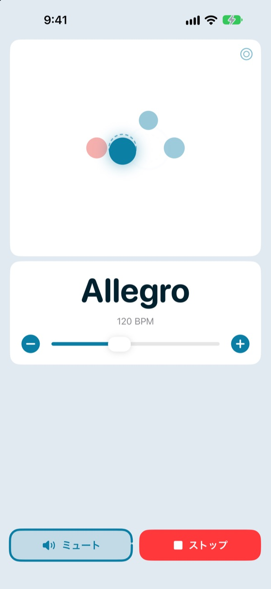
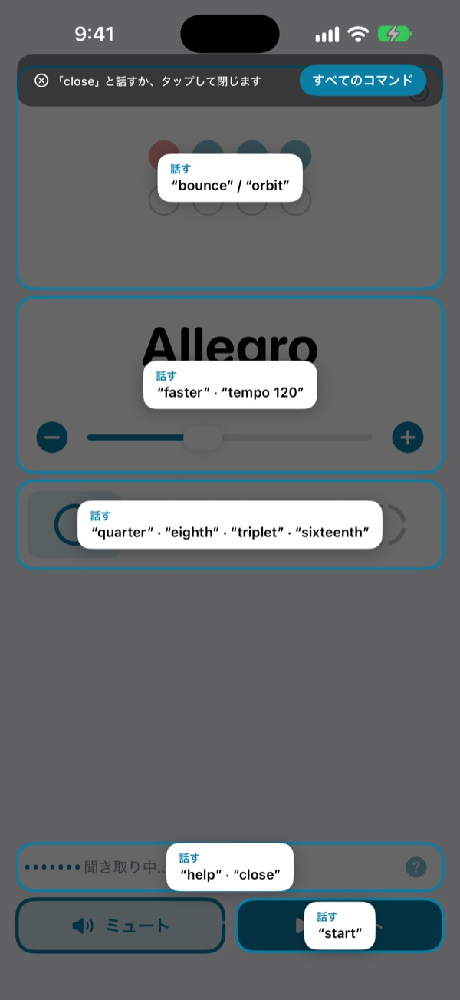
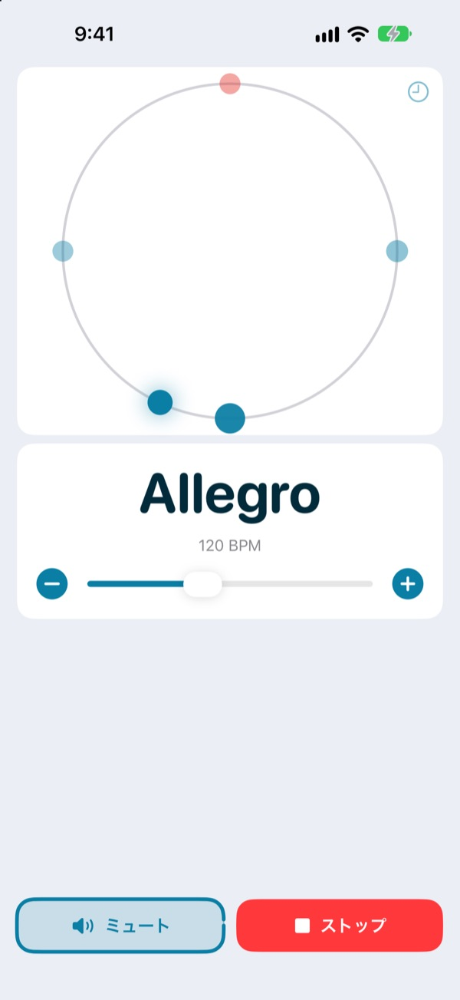
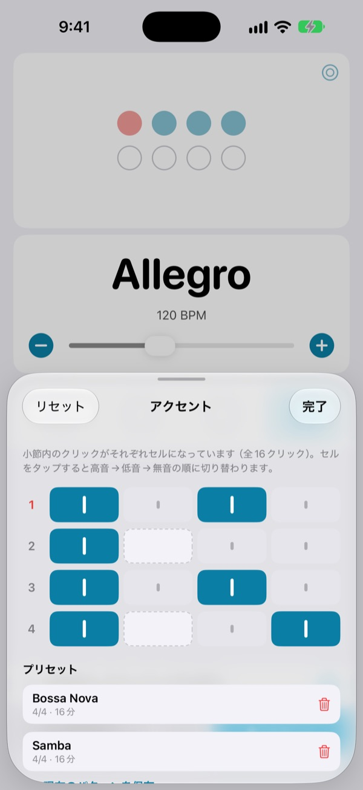

両手は楽器に、
テンポは言葉で
演奏の途中で faster と言えば、クリックが速くなります。テンポを変えるために演奏を止める必要はありません。
メトロノームの基本機能と音声操作は無料です。

声で試してみる
ボタンを押すか、マイクをオンにして英語で話しかけてみてください。音が鳴るので音量にご注意ください。
テンポを少し変えたいだけなのに、流れが途切れていませんか？
弓を置き、ピックをくわえ、画面を2回タップする。そのあいだに、せっかくつかんだ感覚は消えてしまいます。Not My Tempoなら、演奏の姿勢のまま、ひと言でテンポを変えられます。
話せば、すぐについてくる
start、faster、tempo 120 のような短い英単語で話しかけます。iOSの音声コントロールやアクセシビリティの設定をオンにする必要はなく、アプリを開けばすぐに聞き取りが始まります。
コマンドを忘れたら help と言ってください。話せる言葉がすぐ画面に表示されます。

拍を目でも追える
バウンス、オービット、リングの3つの表示から選べます。小節の1拍目は赤く表示され、強く鳴ります。
オービット表示で拍に合わせてタップすると、どれだけ正確だったかがわかります。

曲ごとにアクセントを保存
小節内のクリックをひとつずつ強く、弱く、無音に設定し、曲ごとのプリセットとして残せます。ボサノバもサンバも、一度作れば次からは選ぶだけです。（Pro）

はじめかたは3ステップ
- 1
アプリを開く
開いた瞬間から聞き取りが始まります。
- 2
マイクを許可する
初回だけ、マイクと音声認識へのアクセスを確認します。
- 3
話すか、タップする
どのコマンドも画面のボタンで同じ操作ができます。
話せるコマンド
- start · stop
- 再生、停止
- faster · slower
- 5 BPMずつ上げる、下げる
- up · down
- 1 BPMずつ上げる、下げる
- tempo 120
- 指定したテンポにすぐ合わせる
- double · half
- 2倍、半分
- three beats
- 拍子を変える
- quarter · eighth · triplet · sixteenth
- 4分、8分、3連符、16分で細分
- louder · quieter · mute
- クリックの音量を上げる、下げる、消す
- volume 60
- 音量をパーセントで指定
- bounce · orbit
- ビート表示を切り替える
- timer 5 minutes
- 練習タイマーをセット
- practice
- 練習しながらテンポを少しずつ上げる（Pro）
- tune
- チューナーを開く（Pro）
- help
- コマンド一覧を表示
- close · done
- 開いているパネルを閉じる
音声認識は英語（米国）で動作するため、コマンドは英単語で話します。日本語のコマンドには対応していません。アプリの画面は日本語で表示されます。
メトロノームは無料。もっと使いたくなったらPro
無料
- すべての音声操作
- 1拍から8拍までの拍子と1拍目のアクセント
- 4分、8分、3連符、16分の細分
- バウンス、オービット、リングの3つの表示
- タップテンポとタイミングチェック
- 練習タイマー
Not My Tempo Pro
- 練習モード：数小節ごとにテンポを上げて、目標の速さまで引き上げる
- アクセントエディタと曲ごとのプリセット
- クロマチックチューナー
無料トライアル付きの年間サブスクリプション、または1回限りの買い切り
音声操作とアクセシビリティ機能は、これからもずっと全員に無料です。Proが登場する前にアプリを購入された方は、Proの全機能をすでにお使いいただけます。
よくある質問
日本語で話しかけても大丈夫ですか？
音声認識は英語（米国）で動作するため、コマンドは start や faster のような英単語で話します。どれも短い単語なのですぐに慣れますし、すべてのコマンドは画面のボタンでも操作できます。
声を聞き取ってくれません。
マイクの状態が「聞き取り中」になっているか確認してください。オフになっていたら「聞き取り」をタップします。周りがうるさいときやスピーカーで大きく鳴らしているときは、イヤホンを使うとクリック音がマイクに入らず、ずっと聞き取りやすくなります。
聞き取りが勝手にオフになりました。
バッテリーを節約するため、数分間コマンドがないと聞き取りがオフになります。「聞き取り」をタップすれば再開します。
テンポが半分や2倍で認識されます。
double か half と言えばすぐに直せます。
チューナーはどう使いますか？
tune と話すか、テンポカードの波形ボタンをタップします。音をひとつ鳴らして、インジケーターが緑の範囲に入れば音が合っています。閉じるときは close と言ってください。
iOSの音声コントロールを使っています。
アプリのマイクをオフにして、ボタン名で操作してください。各ボタンにはVoiceOver用のラベルを付けています。
私の声はどこかに送られますか？
いいえ。音声は端末上で認識し、録音、保存、送信は一切しません。メトロノーム、音声操作、チューナーはオフラインでも使えます。
サブスクリプションはどうやって解約しますか？
「設定」>「Apple Account」>「サブスクリプション」から解約できます。現在の期間が終了する24時間前までに解約しない限り、自動的に更新されます。買い切りは1回限りのお支払いです。
ご質問やご意見は leeo@kakao.com までお送りください。